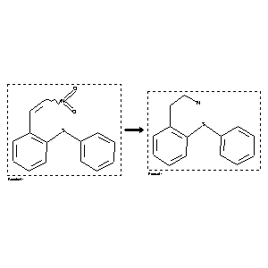

 |
| FA | RX(1); FLST(1); RX(1) |
Reaction (1 of 1)
| Reaction ID | 2559888 |
| Reactant BRN | 4443762 |
| Reactant | 1-nitro-2-[2-(phenylthio)phenyl]ethene |
| Product BRN | 4680167 |
| Product | 2-(2-phenylsulfanyl-phenyl)-ethylamine |
| No. of Reaction Details | 1 |
Reaction Details (1 of 1)
| Reaction Classification | Preparation |
| Reagent | LiAlH4 |
| Solvent | diethyl ether |
| Time | 3 hour(s) |
| Other Conditions | 2 days at r.t. |
| Comment | Yield given |
| Citation Pointer | 5558481; Journal; Jilek, Jiri; Urban, Jiri; Taufmann, Petr; Holubek, Jiri; Dlabac, Antonin; et al.; CCCCAK; Collect.Czech.Chem.Commun.; EN; 54; 7; 1989; 1995-2008; |
Reference (1 of 1)
| Citation Number | 5558481 |
| Document Type | Journal |
| Authors | Jilek, Jiri; Urban, Jiri; Taufmann, Petr; Holubek, Jiri; Dlabac, Antonin; et al. |
| CODEN | CCCCAK |
| Journal Title | Collect.Czech.Chem.Commun. |
| Language Code | EN |
| (Series) Volume | 54 |
| Number | 7 |
| Publication Year | 1989 |
| Page | 1995-2008 |